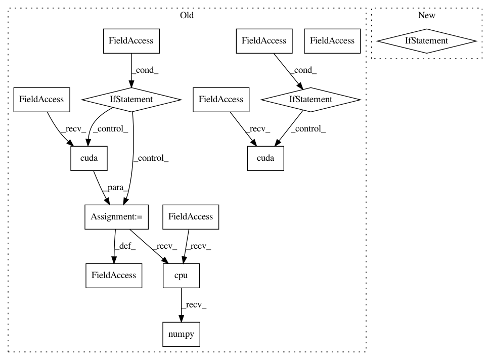

cbcc3f315c653706ceded6ba42f222616322a3f2,ch03/03_atari_gan.py,,,#,132
Before Change
net_discr = Discriminator(input_shape=input_shape)
net_gener = Generator(output_shape=input_shape)
if args.cuda:
net_discr.cuda()
net_gener.cuda()
objective = nn.BCELoss()
gen_optimizer = optim.Adam(params=net_gener.parameters(), lr=LEARNING_RATE, betas=(0.5, 0.999))
dis_optimizer = optim.Adam(params=net_discr.parameters(), lr=LEARNING_RATE, betas=(0.5, 0.999))
writer = SummaryWriter()
gen_losses = []
dis_losses = []
iter_no = 0
true_labels_v = Variable(torch.FloatTensor([1.0] * BATCH_SIZE))
fake_labels_v = Variable(torch.FloatTensor([0.0] * BATCH_SIZE))
if args.cuda:
true_labels_v = true_labels_v.cuda()
fake_labels_v = fake_labels_v.cuda()
for batch_v in iterate_batches(envs):
// generate extra fake samples, input is 4D: batch, filters, x, y
gen_input_v = Variable(torch.FloatTensor(BATCH_SIZE, LATENT_VECTOR_SIZE, 1, 1).normal_(0, 1))
if args.cuda:
batch_v = batch_v.cuda()
gen_input_v = gen_input_v.cuda()
gen_output_v = net_gener(gen_input_v)
// train discriminator
dis_optimizer.zero_grad()
dis_output_true_v = net_discr(batch_v)
dis_output_fake_v = net_discr(gen_output_v.detach())
dis_loss = objective(dis_output_true_v, true_labels_v) + objective(dis_output_fake_v, fake_labels_v)
dis_loss.backward()
dis_optimizer.step()
dis_losses.append(dis_loss.data.cpu().numpy())
// train generator
gen_optimizer.zero_grad()
After Change
parser.add_argument("--cuda", default=False, action="store_true", help="Enable cuda computation")
args = parser.parse_args()
device = torch.device("cuda" if args.cuda else "cpu")
envs = [InputWrapper(gym.make(name)) for name in ("Breakout-v0", "AirRaid-v0", "Pong-v0")]
input_shape = envs[0].observation_space.shape
In pattern: SUPERPATTERN
Frequency: 3
Non-data size: 15
Instances
Project Name: PacktPublishing/Deep-Reinforcement-Learning-Hands-On
Commit Name: cbcc3f315c653706ceded6ba42f222616322a3f2
Time: 2018-04-25
Author: max.lapan@gmail.com
File Name: ch03/03_atari_gan.py
Class Name:
Method Name:
Project Name: PacktPublishing/Deep-Reinforcement-Learning-Hands-On
Commit Name: 7a6e3b93fb4b97af7b06244b768b1fee4b547c17
Time: 2018-04-29
Author: max.lapan@gmail.com
File Name: ch12/train_crossent.py
Class Name:
Method Name:
Project Name: PacktPublishing/Deep-Reinforcement-Learning-Hands-On
Commit Name: cbcc3f315c653706ceded6ba42f222616322a3f2
Time: 2018-04-25
Author: max.lapan@gmail.com
File Name: ch03/03_atari_gan.py
Class Name:
Method Name:
Project Name: PacktPublishing/Deep-Reinforcement-Learning-Hands-On
Commit Name: d5b0cd8e7960c247bb7c5b7c832358f8831780fb
Time: 2018-04-29
Author: max.lapan@gmail.com
File Name: ch15/03_train_trpo.py
Class Name:
Method Name: